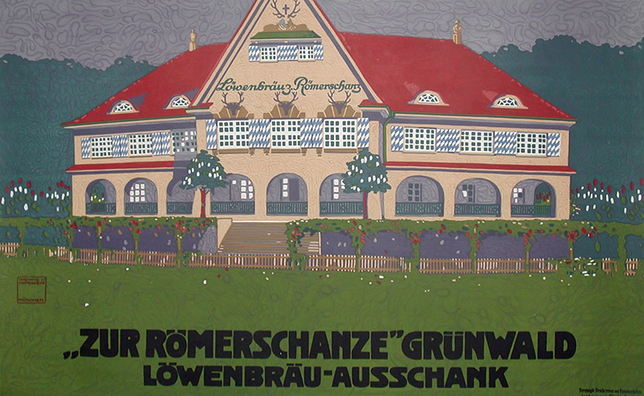

Overview
Ludwig Hohlwein (27 July 1874 in Wiesbaden to 15 September 1949 in Berchtesgaden) was a German poster artist. He was trained and practised as an architect until 1906, when he switched to poster design. Hohlwein's adaptations of photographic images was based on a deep and intuitive understanding of graphical principles. His creative use of color and architectural compositions dispels any suggestion that he uses photos as a substitute for creative design.
Biography
Leading poster historian Alain Weill comments that "Hohlwein was the most prolific and brilliant German posterist of the 20th century... Beginning with his first efforts, Hohlwein found his style with disconcerting facility. It would vary little for the next forty years. The drawing was perfect from the start, nothing seemed alien to him, and in any case, nothing posed a problem for him. His figures are full of touches of color and a play of light and shade that brings them out of their background and gives them substance "(Weill) Self-taught as a graphic designer, he was greatly influenced by the brilliant work of Beggarstaff.

The first great professional German poster artist and graphic designer, working extensively and prolifically in Munich until 1944. He worked for many clients including the Nazi government. He died in Berchtesgarten in 1949. He was a master of drawing and synthesising from photographs. He excelled at balancing forms and colours on a decorative surface. His heavier style in the late 30's was an attempt at manipulation of the surface, to make his designs more painterly. His work still awaits a sensible historian. Below is a selection from a Calendar Book from the height of his fame. It shows his painterly style, and the more stylised elements used on matt paper and set in text.

The thousands of posters left behind by this German master of color and line leave no doubt that Hohlwein is the greatest poster artist of early twentieth century Germany. Influenced more by the Arts and Crafts movement flourishing in Vienna than the proliferation of the art in France and Belgium , he was also an admirer of the Beggarstaffs and Mackintosh.
Hohlwein's high tonal contrasts and a network of interlocking shapes made his work instantly recognizable. Hohlwein was employed by the German government during the First World War to produce propaganda posters. He did the same as World War Two was beginning.